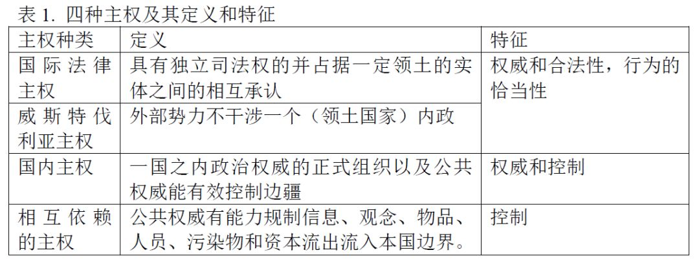
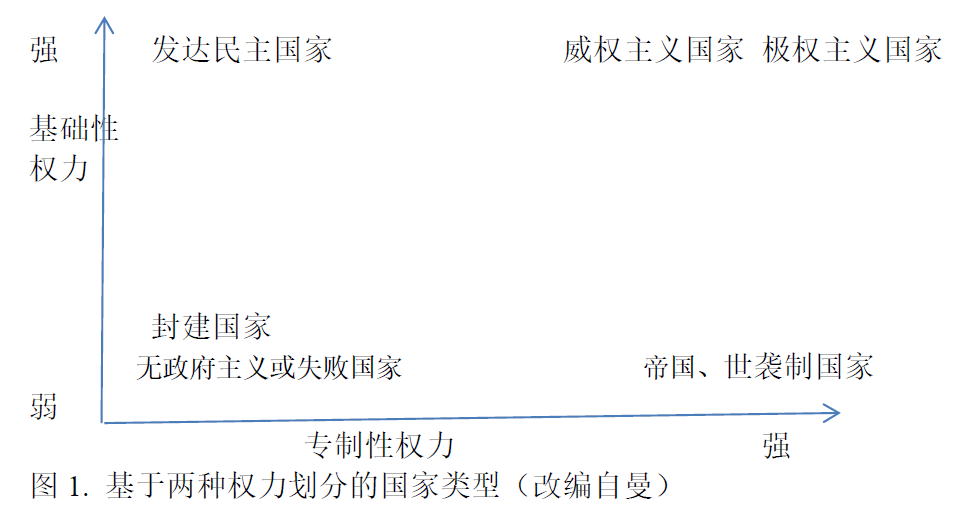
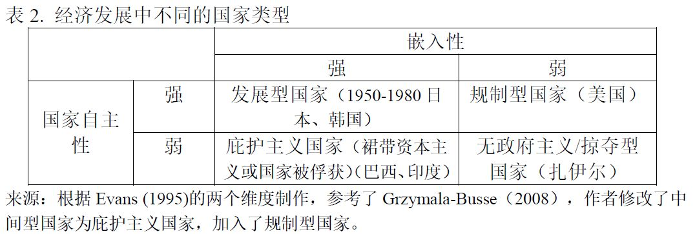
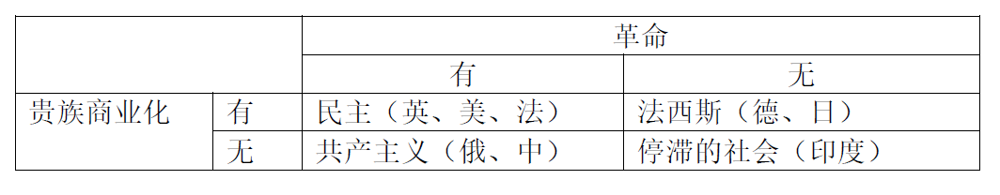
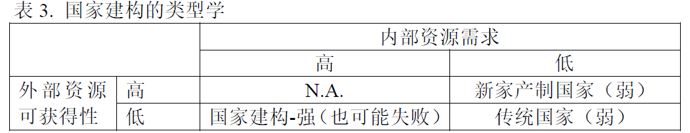
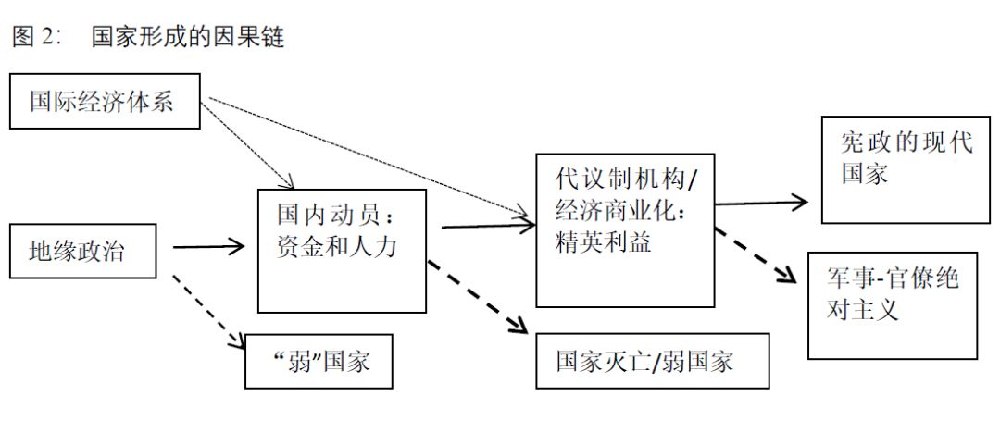

张长东|比较政治学视角下的国家理论发展
收录于合集
作者简介： 张长东，北京大学政府管理学院副教授，国家治理研究院副研究员。
文献来源： 《北大政治学评论》2018年第1期，第197-234页。
摘要： 作为比较政治学的核心理论之一，国家理论在过去四十年得到了实质性发展。本文先梳理介绍了不同理论视角下的国家概念和国家类型。然后回顾了国家理论的发展，从上世纪六七十年代社会中心论主导到八十年代初兴起的“找回国家”运动的国家中心论，再到八十年代末九十年代初兴起的国家- 社会关系的再平衡。紧接着，文章第三部分从国家建构视角讨论了不同地区现代国家的形成及其相应的理论解释。最后文章对国家理论的研究做了一些方法论上的讨论。
关键词： 现代国家；国家建构；军事-财政模型；比较政治学
国家是人类历史上最重要的制度之一，现代国家则被认为是一国经济发展和社会进步的前提条件（也可能是问题本身），被赋予了越来越多的功能和责任。因此，对国家的研究，和对诸如权力和权威、民主与威权政体的研究等，都成为了政治学的核心研究话题。国家研究的理论发展一方面反映了政治学学科发展的状态，另一方面也推动着政治学及相关学科的发展。国家理论对于政治学理论而言具有根本性的意义。正如经济学需要预设一个市场——不管是何种属性的市场——的存在才能研究个体、厂商乃至政府的行为，政治学研究需要一个揭示了的(explicit)或者至少是隐含的(implicit)国家概念作为前提基础。
国家理论有多个理论源流，韦伯从组织和支配的角度对国家的定义在比较政治学里长期占据主导地位，马克思的阶级统治工具的国家理论也影响深远，斯密的守夜人国家理论则被发展形成了基于理性选择的新古典国家理论，霍布斯把国家视为提供秩序的利维坦的观点也不可忽视。这些不同的理论流派还互相影响，推动了国家理论的实证研究。
二战后，比较政治学学科里的国家理论经历了被相对忽视、各种“社会中心论”理论盛行（二十世纪五十年代到七十年代中后期），到“重新找回国家”的国家中心论运动（二十世纪七十年代中后期到八十年代后期），再到理论多元化三个阶段。正如科学里面的范式转换一样，三个阶段中每个阶段都是对前一个阶段的反动，有时候甚至是矫枉过正。本文主要讨论第二第三阶段的国家理论发展。鉴于国家理论文献众多、流派纷呈，且国内外已经存在许多综述性文章，以及本人时间和学力有限，本文并不试图对比较政治学里的国家理论做一个无所不包的综述，而是尽量找出其理论主要发展脉络，侧重讨论新进发展，作为读者进一步阅读的路线图。作者在写作中，在思路上较多地参考了以下几个综述性文献：Levi 2002年的”The State of the Study of the State” (Levi 2002)，Migdal 2009年的”Researching the State” (Migdal 2009)，以及Vu 2010年的”Studying the State through State Formation” (Vu 2010)。因为在美国政治这一分支学科中，对国家的研究不多（但是也有少量很好的研究）且和比较政治学里国家理论的对话很少，因此本文不讨论。
本文的第一部分将介绍几个重要的国家的概念界定及几种重要的国家类型划分；第二部分将简要梳理二战后比较政治学界国家理论发展的主要脉络：国家理论的“缺席”到重新找回国家到国家社会关系的再平衡；第三部分侧重讨论国家建构，从动态的角度看现代国家的形成和演变，及其如何影响国家形态的多样性；第四部分做一个简短的讨论。
一、国家的概念和类型
在一本新近出版的书中，综合（但也抛弃许多要素）了霍布斯、马克思、韦伯、蒂利、奥尔森等人的国家定义，Centeno等人把国家定义为“一套嵌在社会中的治理机构，被认为是一种提供秩序和公共物品的组织化支配的形式 (Centeno, Kohli and Yashar 2017: 1)” 。 Vu(2010)则认为国家是政治行为者活动的机构性构造（institutional configurations），从方法论上讲，国家无法被作为一个自变量对待，而应该被视为是政治运行的场所或过程。和许多其他关于国家的概念一样，这两个概念揭示的因素和忽略的因素都很多，下面我们通过列举和比较一些关于国家的定义来讨论其中重要的因素。
基于理想型的方法论和用手段（暴力）而非目的或活动定义国家的考量，韦伯（2016）提出了国家的经典定义：“国家者，就是一个在某固定疆域内肯定了自身对武力之正当使用的垄断权利的人类共同体。就现代来说，特别的乃是：只有在国家所允许的范围内，其他一切团体或个人，才有使用武力的权利。因此，国家乃是使用武力的‘权利’的唯一来源。” 然而这个经典概念本身是一个复合型概念，至少包含以下几个层次的意义。首先，国家领导者们通过掌握正规军和警察部队、消灭非国家控制的军队、民兵和强盗而垄断其社会中的主要暴力手段。第二，通过相对于国内和外部势力的国家自主性，国家官员们力图按自身的偏好行事，制定能重塑、忽略或绕开即使是最强大的社会行为者们的偏好的政策。第三，国家领导者们力图使其机构高度分化，从而使得其无数的机构都专注于治理其民众生活细节的各种专门化的、复杂的任务。第四，（通过集权）国家的建造者们希望这些机构相互能很好地协调，从而使国家的不同机构间有凝聚力、不同机构工作的人们有共同的目标（米格代尔 2009）。因为概念的复合性，韦伯的追随者们对国家概念的理解也突出不同的侧重点，难免见仁见智。曼(Michael Mann)扩充了韦伯的国家定义，认为：“现代国家”具有一种行政、法律秩序，且后者随法律而变，同时，立法也决定了行政人员——他们同样受制度约束——的有组织行为。这一由秩序组成的体系要求对国家的组成成员、公民——以及，在很大程度上堆砌管辖范围内发生的所有事情——拥有令行禁止的权威。因此，“现代国家”是具有明确地域的强制性组织（曼 2015：65）。吉登斯（1998）修正韦伯的概念，去掉了其垄断暴力工具和合法性两个要素，认为国家的“统治在地域上是有章可循的，而且还能动员暴力工具来维护这种统治。（21页）”国家意指行政管理机器，是由专门从事行政管理工作（包括军事技能）的官员所组成的等级体系（79页）。
基于经济基础决定上层建筑的原则，国家也被马克思主义者定义为经济上占统治地位的阶级进行阶级统治的工具。根据不同的分类标准，国家可以被分为不同的类型。按照国家存在的生产关系基础，马克思及其追随者们将国家区分为奴隶制国家、封建主义国家、资本主义国家、社会主义国家和共产主义（国家消亡）。虽然未来得及提出一个明确的国家理论而且在其诸多著作中存在一些相互矛盾的思想，马克思主义很长时间内被认为是工具观的国家观，直到在二十世纪七十年代的国家相对自主性的争论的产生（后文将会具体论述）。魏特夫（1989）的“东方专制主义”理论强调国家作为一个组织，其某些特殊功能（如治水）而非其经济基础，会对国家形式（及其对社会的管控）造成决定性影响。安德森（2016）也修正了马克思的国家观。在农民起义的威胁和西方经济整体结构中的商业、制造业资本的压力相结合的双重压力之下，在西欧产生了绝对主义国家。相对于高度分权的封建主义国家，安德森认为，绝对主义国家是政治法律强制力向上转移到中央集权化、军事化的顶峰。“绝对君主政体带来了常备军、常设官僚机构、全国性税收、成文法以及初步统一的市场”（4页）。“经过重新部署和装备的封建统治机器，旨在将农民在读固定于传统社会地位之上——这是对农民由于地租广泛转化所获得的成果的漠视和抵抗。（5页）”本质上，绝对主义国家还是封建主义国家，因为这一制度建立于封建主义生产关系之上，且维护封建贵族集体利益——将农民和市民群众压制住社会等级制度的最底层。但却将作为组织的国家的这一面提出了。
与马克思和韦伯的传统不同，理性选择理论的国家概念强调国家中理性的统治者(ruler)的重要性。奥尔森提出了“国家是常驻的匪帮”这一高度简化却很有洞察力的剥削论/掠夺论国家观。奥尔森认为国家的本质是掠夺性的（而非为了善或者正义），但是有的匪帮是流寇，其手段是杀烧劫掠，一次性获得最多的战利品；一旦有的匪帮能够长期控制一片领地，他们会发现，杀烧劫掠并不能带来自身收益最大化，因为这样会摧毁生产力，不利于下次掠夺。因此，常驻的匪帮会选择收取最大化的保护费（税收）而非杀烧劫掠，并保护民众不受其他匪帮劫掠，从而成为了国家(Olson 1993)。因此，关键是统治者的折现率——流寇的折现率(discount rate)很高而坐寇（常驻的匪帮）则具有较低的折现率，（一个期望万世传位的）国王的折现率甚至低于民主体制下的总统或首相。列维也将国家（统治者）的目标视为税收最大化，但税收最大化并不意味着掠夺性国家。比奥尔森更进一步（但更早），列维提出了税收最大化的统治者面临三个因素的影响和限制：折现率、交易成本和讨价还价能力，从而提出了一个更为全面的分析框架并在此基础上分析了不同时期的国家形式及其税收形式(Levi 1988)。
诺斯（2002）提出了一个基于契约论但也融入了剥削论的国家观：“国家是一种在行使暴力上有比较优势的组织，它对纳税选民拥有的权力决定其地理疆域的延伸。”国家处于“规定和强制实施所有权的地位”，理解国家的关键在于“潜在的利用暴力来实现对资源的控制”（ 22页）。国家之所以重要是因为存在国家悖论：国家的存在对于经济增长来说是必不可少的；但国家又是人为的经济衰退的根源。国家规定和实施产权制度的时候，存在一个悖论：降低市场交易成本以促进经济效率从而促进经济增长；降低税收提取的交易成本从而增加国家税收。此外，统治者往往需要借助代理人实行统治和征税，但代理人往往和统治者有不同利益，需要统治者支付不同水平的监督费用。诺斯称之为交易成本约束。另外一个约束是竞争者约束：国外的竞争者和国内的潜在竞争者。统治者需要为（核心）选民提供公共服务以获取其支持以战胜国内外的竞争者。诺斯进而认为人口变化（影响土地和劳动的相对价格，从而影响所有权）、自然地理条件、地区资源和国家的军事技术在决定国家的规模和特点以及在塑造经济组织的形式方面，起了决定性作用（65页）。诺斯虽然强调了国家的重要性并提出了许多极富洞察力的观点，但是他对动态发展的动力归因于相对价格变化和意识形态变化，因此并无法提供现代国家形成和变化的理论。
和诺斯类似，华盛顿学派的另外一位代表人物巴泽尔(Barzel 2002)认为国家有两个组成部分：1）一群受单一的、运用暴力以实施（产权和协议）的最终的第三方约束的人；2）此实施权所覆盖的、这群人所居住的疆域（p4）。列维(Levi 2002: 40)将国家界定为“一个权力集权化且制度化的复杂机构，它在一定的领土范围内集中(concentrate)了暴力、确立了财产权并规制社会。这一机构也得到了国际社会的正式承认。” 对理性选择者而言，国家理论充满内在的矛盾：国家是由一群利益最大化的个体构成的，但这群人却被要求提供各种公共物品（而非寻租）。因此，我们需要从理性选择理论进入（比较）制度主义理论，研究制度如何激励和约束个体行为者，来更好地定义和构建国家理论（Evans 1995: 25）。
和国家概念非常紧密联系的概念是主权——完整的主权也是国家区别于其他组织的一个核心特征。Krasner(1999)认为有四个主权概念，本文将其归纳为表1.

对于一个既定国家，四个主权可能但并不一定是正向相关的，而是可能参差不齐的。这种发展中国家尤为明显。
国家类型
前文提到，国家是个复合型概念，包含多个维度，因此按照不同维度进行分类就能分出很多国家类型。此外，还可以通过加前缀形容词增加新的维度。此处仅介绍几种分类，文中还会从经济发展的角度讨论国家类型学。
韦伯认为经济社会发展的关键特征是理性化和科层化。在此基础上主要区分了家产制国家和现代（理性化）国家。合理的国家（rational state）：以有专长的官吏阶级和合理的法律（形式主义的司法）为基础，实行有连贯性的先后一致的经济政策（重商主义）(Weber 1968)。如后文将重点讨论的，现代国家的形成很大程度上就是家产制国家向合理化国家转变的过程。当然，这个分类法也是基于理想型的方法论而无法被简单套用。譬如，中国历代王朝会被认为家产制和官僚制混合体国家。一个原因是农业无法产生足够的剩余来供养一个现代化的官僚体系，因此虽然取代分封制的郡县制在秦汉时期就确立、取代贵族制的科举制（基础上的官僚体系）早在隋唐时期就形成，但国家的职能范围有限（税收、治安、赈灾）、渗透能力有限（皇权不下县）、官僚化程度有限（严重依赖非官僚化的胥吏进行治理）。
熊彼特的国家类型说。以国家的财政收入来源作为分类标准，熊彼特区分了“领主国家(domain state)”、税收国家、租金国家(rentier state)。其中税收国家指国家通过常规性地征收税收获得主要收入的国家形态；租金国家则是依赖源自自然资源（如石油、矿产）等收入的财政资源的国家(Schumpeter 1918)。财政国家则是国家可以通过以未来税收为抵押的借贷获取临时性的大量资金。Lieberman进一步拓展和细化了基于税收国家的类型学，提出了五类税收国家：弱税收国家（Skeletal state，直译为骨瘦如柴型国家）、租金国家、共产主义国家（类似于刘守刚（2015）提出的现代型家财国家），并根据精英阶层是否纳（更多的）税把税收国家分为两类：对抗型税收国家（精英群体不纳税）和合作型税收国家。
熊彼特赋予了税收和财政极度重要性，认为既是政治经济社会变迁的重要原因又是重要结果：一切重要的经济社会变迁都可以找到财税的根源。这些变化包含现代国家的产生（这一点熊彼特并未明确阐释）和代议制民主制度的确立——这一点也是“无代表不纳税”原则的体现。
不难发现，韦伯的国家概念和熊彼特的国家类型存在一定的契合性，其重要原因是官僚制需要税收制度作为支撑。我们在后文会看到，国家建构理论的原型军事- 财政国家理论就受到二者的深刻影响。
曼对这两种国家权力之间关系的讨论更好地体现了国家自主性和国家能力之间的关系（后文会具体阐释这些概念）：基础性权力并不必然和专制性权力正相关，二者之间的关系可以是各种组合。如果我们以二者为纵轴横轴做图1，那么存在四类极端的类型，还有更多国家则是分布于四个角之间。

国家的静态的类型分析有助于提供清晰的概念，但国家类型的动态演变则更能加深我们对国家本质及其功能的认识。本文的第三部分将讨论现代国家的形成，尤其是基础性权力增长背后的动力，也会涉及到专制性权力的消长。
按照国家能力的强弱，我们可以将国家区分为强国家、弱国家、失败国家或崩溃国家等。当然，因为国家能力往往指的是多项能力，因此可能存在有的国家指某项能力上特强，但在另外国家能力上却很弱的情况。强国家往往是长期的、充满流血历史的国家建构的成果，其他类型国家则缺乏国家建构的历史或国家建构失败。相对于中央集权且强力的现代民族国家，有机国家(organic state，此处有机一词借助斯宾塞的有机团结概念)无力直接和广泛地渗透社会，但因为存在宗教归属或缺乏较强的政治化的种族差异却也能获得民众精神上的效忠——因为除了国家之外民众缺乏替代性的认同或可依附物（Badie 2000: 5）。
二、从国家的缺席到重新找回国家
政治学的行为主义革命认为正式制度规则和现实政治之间存在巨大的鸿沟，强调对现实政治的研究。在美国政治中，对“政府过程”的研究——政党的运作、利益集团和政策游说、公众舆论和投票行为研究等等取代了对国家和正式制度的研究。二战后新兴的对发展中国家的比较政治学研究侧重于政治发展研究，多数基于现代化理论和结构- 功能主义，强调公民文化研究。马克思主义的影响在国内政治层次主要在于巴林顿.摩尔开创的阶级和民主化的关系，在国际层次则是依附论和世界体系论。正如马克思主义强调阶级分析，多元主义（利益集团理论）强调各种群体和团体，而将国家视为社会中心论——亦被称为“社会还原论(societal reductionism)”或情境主义(contextualism)，及将国家的性质及其政策视为社会力量对比的反映，国家自身缺乏自主性。
然而，国家这一概念及相关理论分析并没有在那个时代被彻底遗忘，一些学者提出了非常重要的呼吁，其代表性人物是亨廷顿、内特尔和奥唐奈。虽然没有使用国家一词，但亨廷顿在其《变革社会中的政治秩序》中提出了许多和国家理论相关的概念和理论分析，尤其是其“制度化”概念和理论，直接或间接地影响了七十年代末开始复兴的国家理论。如米格代尔（2009）所归纳的那样：
“亨廷顿没有使用‘国家’这个词——当时这个词已经过时——但是国家还是不断地在他的分析中呈现出来。事实上，国家回归的潮流正应该归功于亨廷顿；他没有用一个词汇来确切地指称国家，他所描述的是在一定范围内（国家）的公共机构排列的行动和特征如何对社会产生了巨大的影响。他使得公共机构重返学术舞台的中央。他的理论还暗示如果我们仅仅关注国家是如何发展它的制度的，那么我们的视野就无法更加深入。他的论点很简单：只有当政治制度化的程度超过政治参与的程度时，才能产生稳定的、为公益服务的政治。”
奥唐奈(2008[1973])则批评了现代化理论经济发展带来民主的预设，提出了官僚威权体制相对于经济社会变量的独立性和影响经济社会发展的作用。虽然没有明确提出国家概念，但是却也标志着学界对各种社会中心论的深刻反思而且概念中对军队和官僚机构的重视和后来的国家主义文献一脉相承。
基于韦伯的理想型国家概念使得人们忽视了不同国家的差异，内特尔(Nettl 1968)提出了“国家性(stateness)”这一概念，提出应该将国家视为一个概念性变量而非常量——不同国家间存在质和量的区别——只有这样我们才能进行有意义的实证的比较研究。内特尔列出了国家的以下四个特征：
1）国家是具有一系列功能和结构的集合体；
2）国家在国际关系领域是一个单一的行为体；
3）国家是代表了社会一般性的一个自主的集合体和概要概念（The state represents an autonomous collectivity as well as a summating concept of high societal generality）；
4）国家本质上是一个社会文化现象（有其主观和建构层面）——国家的边界正是存在于此而非其他三个层面。
虽然没有很快改变学界的研究风向，但是内特尔的理论引起了学界的反思并产生了深远的影响。很快就兴起了“把国家带回来(bringing the state back in，或译为‘重新找回国家’)”的运动，强调政治社会变迁乃至经济发展中国家的核心作用。
重新找回国家
然而，正如韦伯指出的那样，国家自身是一个组织机构（organization/institution），而相对于组织程度松散的社会群体（如阶级、利益集团等）而言，组织化了的国家会呈现许多自身特征——这些特征包括自主性、（横向和纵向的）集中化程度、委托代理关系等等。进而有学者将政治视为基于层级原则（hierarchy，背后是权威的运用）组织的制度，将市场视为基于交易(exchange，背后是自愿原则)的制度。
七十年代末以来，一些学者开始将国家这一概念作为核心研究对象，从而掀起了一场以1985年编辑出版的《把国家带回来》一书（论文集）为高潮的学术潮流，倡导以国家中心论范式取代之前的各种版本的社会中心论。这方面文献众多，包括Stepan(1978)对秘鲁的研究、斯考切波对国家和社会革命的研究、埃文斯对“依附性发展”的研究(Evans 1978)、Nordlinger（1981）关于资本主义国家自主性的研究，等等。基于这些文献，Krasner(1984)在一篇综述性文章中归纳最近十年内的国家主义文献区别于行为主义革命文献的五个主要特征：
1）国家主义者视政治为统治和控制而非（资源）配置（伊斯顿的定义）；更强调针对国内外的威胁维护既有秩序而非在政治行为者之间配置利益；
2）认为可以将国家视为一个行为者——从而作为一个外生变量或者中介变量，而非一个反应社会特征或者偏好的因变量；
3）强调正式和非正式制度对个体和群体行为的制约——制度限制乃至决定了行为者对自身利益的界定和手中的资源；
4）更注重历史的重要性(historical cure)——这一点在九十年代以来发展成为历史制度主义——并由此产生了第五个特征；
5）反功能主义：结构的存在并不是因为其发挥的功能，功能的发挥并不一定带来相应的结构。
Krasner认为这五个特征并不构成一个一致、连贯的普遍性的国家理论——因为这样一个理论基本是不可能的。
虽然作为区域研究和发展研究的产物而一开始并未有意介入国家回归学派的讨论，但基于东亚经验的发展型国家理论从一开始就天然成为国家回归学派的经典理论。发展型国家理论对国家在经济发展中的主导作用、对官僚体系的强调都和国家学派非常契合。
作为对各种社会中心论的反动，国家回归学派强调两个核心概念，国家自主性和国家能力——也就是国家既有意愿也有能力做自己想做的事情，乃至改变经济社会力量。曼的两种权力观——专制性权力和基础性权力，很大程度上把握住了国家自主性和国家能力理论的核心要素。专制性权力指国家精英对公民社会的分配性权力，“它源自国家精英能不经和公民社会群体协商的程序而采取行动的范围。”相反，基础性权力是“国家中央机构——无论是否专制——渗透入其疆域并准确地执行其决策的制度性能力。(Mann 1986)”曼指出基础性权力是集体性权力，社会“之中的权力”（power through society），通过国家的基础性机构协调社会生活。国家在促进社会变革时所能起的作用和其基础性权力的强弱成正比。
国家自主性：从相对自主性到国家自主性
一些新马克思主义者们（包括前文提到的安德森）意识到国家并非简单是被统治阶级直接控制并进行阶级统治的工具——“在资本主义社会中，国家首先是统治阶级的强制机器，它本身为它的所有制和对生产资料的控制所限定” （米利本德，1997:9-10），从而提出了国家的“相对自主性”概念和理论：国家制定并执行服务于整个统治阶级的根本性利益的政策，而非简单听命于统治阶级的某个特定集团或个人（米利本德，1997）。
对（阶级统治）工具说和（多元主义的利益集团竞争的）场域说忽略国家作为一个机构的独立作用——尤其是其作为独立行为者——的忽视的不满，国家中心论者提出了国家自主性概念：（作为一种对特定领土和人民主张其控制权的组织，）国家可能会确立并追求一些并非仅仅是反映社会集团、阶级或社团之需求或利益的目标（斯考切波 2009：10）。
基于韦伯的官僚制理念，自主性意味着一个高度内聚的、基于能力和成就录取并晋升的韦伯主义的官僚体制。这个官僚体系能调动大量的财政和行政资源，且往往有（通过共同的教育经历和职业经历形成的）共同的意识形态或理念认同等非正式规则作为支撑。国家回归学派主要关注国家自主性及其对于政策（宏观经济政策、产业政策、社会福利政策等等）制定的影响。
从类型学上，学者们区分了三类国家自主性：1）国家和社会行为者偏好不同，但国家坚持己见制定并执行政策；2）二者偏好不同，但国家能说服社会行为者改变偏好，并制定和执行政策；3）二者偏好类似，国家依据自身偏好制定和执行政策。
受发展型国家理论影响，埃文斯重新界定了国家自主性，视其为保证国家（具体部门）能从长远考虑集体利益而非服务于官僚或政客的利益或某些特殊社会力量的利益。因此自主性包含两方面的内容：高度内聚的官僚体系和自主意志。
国家自主性是一个理想型概念，将国家视为一个单一的行为者，然而这样的预设往往无法成立。理性选择理论者倾向于将国家分解（disaggregate）为具体的机构乃至个人，而不像国家学派那样将国家视为一个高度凝聚力的行为者。贝茨发现非洲许多国家的政策制定者往往制定损害经济发展的政策，但他们这么做并非不理性的体现。相反确实非常理性的：这些政策有利于他们取得权势集团的支持而维持权力(Bates 1998)。只有当普通民众拥有决定政策制定者命运的权力（也就是有选票）时，政策制定者们才会制定有利于普通民众的促进增长的政策。而格迪斯则将这个问题用更直接的方式展示出来。她假定政客(politician)和官僚都追求职业成功，因为无论你是现实主义者（为了权力或者个人利益而权力）还是理想主义者（通过权力实现其他目标和价值），权力都是实现目标的工具，所以要实现利益最大化，首先必须能够保住职务。不同于斯考切波等国家学派对外部经济和军事威胁的重视，格迪斯认为外部威胁固然重要，但政客们在采取何种策略应对时也会考虑如何在国内也促进自身的利益，而这在不同的制度下会对国家自主性和能力造成不同的影响。而官僚们也同样受到制度的影响而在实施政策中力度不一。旨在提高国家能力的改革即使不遇到既得利益的阻力，也往往因为是公共物品而面临集体行动的困境而无法实现。这一政治家的生存逻辑被梅斯奎塔及其合作者们(Mesquita et al. 2003；梅斯奎塔等，2014)发展成为“选举团理论(selectorate theory)”,强调致胜联盟而非政治制度（乃至于民主和威权体制）的重要性。这类研究很大程度上解构了国家自主性，至少论证了国家自主性存在条件的苛刻——这一点斯考切波也曾提到。
国家能力
和基础性权力对应的概念是国家能力。斯考切波（2009）认为国家能力是国家（通过）实行政策实现其目标的能力，并认为存在总体的国家能力和按政策领域区分的国家能力——同一个国家在不同政策领域的能力不同。斯考切波进而提出了国家能力是个相对概念并要放在一个和社会相互关系的视角(relational approach)下分析，但在其研究中更多强调的把国家作为自变量的单向度的分析。
吉登斯（1998）则借助福柯的监控概念，强调有组织的信息的收集和组织，以用于1）监视被管理人群的活动，2）机构中上级监视或控制下级。吉登斯认为监控能力是国家能力的基础。
针对“国家回归学派”或“国家中心论”是否带来了范式转变，产生了一系列学术争论，很多学者认为存在言过其实、矫枉过正的问题。其中著名的是阿尔蒙德对国家中心论的严厉批评及其引起的回应。阿尔蒙德(Almond 1988)认为国家中心论者对多元主义和马克思主义的批评太夸大其词，认为多元主义和马克思主义者都强调过国家中心论的主要观点。回应者们则认为阿尔蒙德夸大了之前理论对国家的强调。
国家-社会关系的再平衡
国家中心论者基于发达国家或快速发展的东亚国家得出的理论，在运用到第三世界国家时发生了各种困难，这引起了学者们的反思，强调将国家置于社会背景中研究。
米格代尔认为基于韦伯的理想型国家概念的理论过于脱离现实，尤其是第三世界的现实，从而影响学者更好地分析国家。米格代尔认为在发展中国家，国家只是社会中众多组织中的一个（更严谨地说，一类）组织，其垄断合法性使用暴力及制定统一规则能力的程度国家间差异很大。国家和社会处于争夺社会控制的零和博弈之中：只有当国家成功地将社会控制从社会精英（他称之为地方强人）的手中争夺过来时，国家才能更好地让民众服从它而非其他社会组织制定的规则。
为了进一步分析国家和社会的接触和相互影响，米格代尔（2009）拒绝将国家视为单一的行为者，而是将其拆分。他提出将国家分为四个层级：国家领导、中央（联邦）政府各部门、地区级行政官员、街头官僚(field officers)。在每个层级，国家行动者面临不同的社会行动者和内部的政治斗争，上一层级的政治也会影响下一级的政治，而最下一级的国家和社会关系也会影响到国家高层执行政策的效果——亦即国家能力。米格代尔进而提出了改进版的韦伯式国家观：“国家是一个权力的场域，其标志是使用暴力和威胁使用暴力，并为以下两个方面所形塑：（1）一个领土内具有凝聚性和控制力的、代表生活于领土之上的民众的组织的观念；（2）国家各个组成部分的实际实践。”并在此基础上提出了其社会中的国家分析视角(approach)，兼顾国家观念和实践：“视角一应把国家视为一种强大的观念，它界定清晰、高度统一，且能够被单一的措辞所言说（例如，一个标题性的说明，“以色列接受巴勒斯坦的要求”），就如同国家是一个单独、积极的演员在以高度集中的方式展示其在明确疆域上的统治术；视角二则是将国家视为一系列松散联系的碎片的实践，在这里，国家与其它境内外的组织之间的边界往往未能清晰界定，且后者常常会创制出相互冲突或直接与国家法律相冲突的规范。”
发展型国家对国家自主性的片面强调也被埃文斯的“嵌入自主性(embedded autonomy)”理论所纠正。嵌入自主性指的是“国家有一个成熟的韦伯主义意义上的官僚体制，使其不会为强大的寻租集团所操纵；同时，国家精英处于一个使得他们能和公民社会中的私人部门保持联系的网络之中。”从国家自主性和嵌入性两个维度出发，埃文斯认为存在不同类型的国家及政企关系。埃文斯认为如果光有国家自主性而缺乏国家和企业的联系纽带（信息和沟通），自主的国家也无法制定有效的产业政策推动产业转型。理想的状态是既有国家自主性保证国家（具体部门）能从长远考虑集体利益并不是服务于官僚或政客的利益——也使得其不为企业所俘获，又有嵌入性使得国家能够和具有具体市场信息和激励的企业沟通互动，才能制定有效的产业政策(Evans 1995)。从理论原创角度而言，这其实是继承了1985年《找回国家》一书中斯考切波倡导但未能做到的研究国家能力需要采取关系型(relational)视角的思路。表2发展了埃文斯的国家类型和经济发展的关系。

与此同时，埃文斯在强调政（国家）商（企业）关系的同时，也重新分析了国家社会的正和博弈——国家社会协同关系(state-society synergy)(Evans eds. 1996)。科利(Kohli 2002)在一篇综述性文章中也讨论了这一问题。王旭通过将曼的两种权力观分析米格代尔和埃文斯等人的研究，提出国家的专制性权力是和公民社会群体的零和冲突，而基础性权力则是可以伴随着强而有力的公民团体的发展的，存在正和博弈的可能性并探讨了其条件(Wang 1999)。
三、国家建构：现代国家的形成
二十世纪九十年代兴起的国家建构的研究很大程度上使得国家主义者摆脱了静态比较(comparative statics)面临的方法论困境，把国家（自主性和能力）作为因变量而非自变量甚至更进一步研究其背后因果机制。可以更好地研究不断变动之中的国家，同时可以更好地把握众多相关行为者（而非简单将国家视为具有统一意志的独特的单一行为者）之间的互动，国家社会“边界”的变化，把握正式制度和非正式实践的互动（Grzymala- Busse and Luong 2002）。也正如Vu提出的那样，通过研究国家建构的关键时刻和演变进程研究国家，能够为我们提供两个新的视角。一是把物质和非物质的因素都纳入分析，因为之前的研究更侧重官僚体制的建立和国家暴力的垄断，但对国家垄断知识和合法宣传却言之甚少；二是国家不再被定义为自主的行为者而是政治行为者活动的制度构造(institutional configurations)（Vu 2010: 151）。国家建构并非一个简单的自上而下的动员和提取过程，战争还创造了一种促进（绝望的）民众团结和认同的氛围和符号，使民众和国家牢牢结合在一起，民族主义应运而生。与国家建构相并行的还有民族建构(nation building)过程，也就是对政治共同体的认同的形成过程，往往和民族主义结合在一起。
前文提到，现代国家区别于传统国家的一个重要特征是其动员和汲取社会资源的强大能力、使用武力的能力。而这些能力的提高和一个中央集权的理性- 法理的官僚体系并行不悖且相互加强。某种意义上讲，国家建构的过程就是统治者通过建立各种政治机构来提高国家能力的过程，但这个过程中统治者需要和精英合作或者对抗，需要从社会大众提取各种资源。国家建构的过程是一个集权的过程：一方面是中央集权，在国家内部形成一套持久的机构（，即使联邦制也比封建制更为集权）实现政治权力向上集中；一方面国家集权(concentration)，国家的功能扩充，对经济和社会进行各种渗透和干预，提取税收资源，并形成和社会的特定关系模式（民主还是威权主义）。
国家建构(state building，或者state formation)的过程是往往和政体形成的过程同时进行的。政体形成包括民主还是威权体制，尤其是其各自早期的形式代议制（有限）民主和绝对主义政权，的形成。民主化的研究者们，如摩尔、等，往往注重于政体形成本身而不关注国家建构过程；但国家建构的研究者却往往同时关注二者。
西欧国家建构——国家建构的经典理论
区别于之前社会中心论的学者强调国家是对国内社会经济结构的反映，地缘政治学者强调国际因素——国家和国家之间的战争以及战争威胁的重要影响。国家建构的主要动力是战争，但是战争的形式、持续时间、激烈程度和发生的频繁性都影响国家建构，这也就解释了为何现代国家最早出现在十五世纪以来的西欧而非其他地区。十五世纪以来西欧的军事革命，尤其是常备军的产生、火器的使用、运输力的加强，大大提高了战争的成本，使得战争的规模经济优势得以形成，从而促使国家的规模也需要相应扩大、权力更加集中。
军事-财政模型
战争的关键作用被蒂利的名言“战争造就国家，国家发动战争(war makes state, state makes war)”所形象地展示。战争和战争的威胁使得统治者必须竭尽全力动员国内人力物力以建立强大的军队，而为此需要建立强有力的行政尤其是税收机构。生存的压力迫使统治者建立现代国家，现代国家又在持续的战争中不断适应并改进。用孟子的话说，就是生于忧患。
蒂利（2012）、布鲁尔（Brewer 1989)、曼（2015）等人提出的国家建构的军事- 财政模型基本观点是：战争和为战争提供必须的人力物力（财力）资源成为了统治者最严峻的挑战。那些成功动员（提取）了资源并有效组织战争的统治者生存了下来，甚至征服和兼并了其他国家（而获得了更多的资源）；那些未能有效动员资源的统治者在战争中被更强大的对手战败，失去了政权，国家也被吞并。所以，这里就出现了两个核心变量，战争和征税。税收能力的提高往往是和行政体系能力的提高是相互促进的：更多的税收能够供养更大规模更有效的官僚机构、后者又促进税收的增加。税收之外，君主的另一个财政来源是借贷：向资金富足的商人借贷。
当战争和战争的威胁是一个常量的时候，征税的方式和难度成为一个核心解释变量。又是什么因素决定了征税的难度呢？蒂利（2012）强调资本的总量及其集中对国家建构的影响。农业生产方式对国家建构也有重要影响。当地主需要借助中央政府的权力（暴力）控制农民进行农业生产时，中央集权更容易发生；当地主更多借助市场或地方性暴力（而非中央的暴力）控制农民时，地方更具有自主性（Moore 1966; Brenner 1976）。农业的商业化以及其他的资本和商业提供了战争所需的资金，但因为其流动性较强，国家不易通过暴力手段征收而更需要通过代议机构征收。
以蒂利为代表的军事- 财政国家建构理论被后续者批判性发展，主要是两个方向。一是强调战争以外的因素对国家建构的影响，甚至否认战争的重要作用。如Spruyt(1994)以1400年前后的法国为例，认为即使没有战争或者战争的威胁，统治者也可以在贵族的默许（以税收豁免权为代价）和市民的税收支持下建立起官僚体系；一是强调战争和税收对不同国家国家建构的影响是不同的，受到其他因素作为中介变量的影响。
从结构到行为者
结构解释具有很强的解释力，但是行为者（统治者）的作用同样不容忽视。战争和战争的威胁使得统治者为了政治生存而努力通过加强军事实力和行政管理能力，但这并不能解释不同国家不同的国家建构努力和结果：有的统治者采取了很大的努力但有的却无所作为；有的统治者建立了强大的国家并吞并邻国乃至于建立海外殖民地，但有的统治者却社稷不保。虽然很多时候统治者会在类似结构压力下选择类似的行为，或者他们模仿成功案例，但是行为者的选择很多时候还受到国际和国内结构之外的因素影响（Dincecco 2015）。这些因素中被重点研究的因素主要是精英的意识形态、精英间关系、宗教信条等。已有的政治制度如行政体制和代议制机构也会起一定作用。除了战争胜败、外交联盟等外部解释因素之外，我们还需要寻求内部解释因素。这就回到了国家自主性问题和摩尔提出的民主和专制的社会根源问题，需要把国家建构和政体形成两个重要问题结合起来分析。
借助历史制度主义的强调时机和事件发生顺序(timing and sequence)的分析视角，艾特曼（2010）认为战争发生的时机(timing)是关键性因素。1450年前发生的战争（主要发生在欧洲南部和西部），因为当时国王可获得的技术资源——受过教育可充任官员的职业化人士、法律观念和可借贷资金——都非常有限，国王需要和贵族（只有他们受过教会的教育）合作获得人力资源、和为数很少的金融家和商人合作借贷战争所需资金，因此战争往往带来的是家产制国家——官位可以被出售、继承、转卖；1450年后的战争（日耳曼地区和北欧），因为当时大学的发展，国王可以直接利用受过大学教育的人来充实听命于他本人的官僚体系。与此同时，因为资本主义商业的发展，借贷机会也大大增加。所以形成了官僚制国家。 Spruyt(1994)对法国、德国、意大利的比较研究也提供了统治者和社会阶级的联盟理论视角。
精英的团结机制
统治者不能单凭自身进行国家建构，他需要联盟者——也称之为精英。不同的精英群体有不同的利益诉求和意识形态，因此统治者在寻求支持和合作的时候也需要满足其支持者的利益诉求。统治者需要借助他人进行统治，需要支持者和盟友。精英群体有不同的利益和意识形态，因此可以被进一步划分为不同的精英群体（拉克曼 2013）。在一些非君主制国家或者君主地位不稳固的国家，国家建构则是精英间的竞争。Grzymala-Busse and Luong（2002）将国家建构定义为“精英们竞争政策制定和执行的结构性框架权威的过程”(p. 537)。
在其经典研究《民主与专制的社会起源》一书中，摩尔认为土地贵族的利益和权力是影响一个国家政体选择的重要因素。而贵族的利益取决于其商业化程度——商业化程度高则拥护民主体制和市场经济，反之亦然；贵族的权力取决于暴力革命的有无——暴力革命能削弱乃至摧毁贵族的权力。

从国家建构的视角，摩尔的理论也提供了很多洞察力，和蒂利的观点（资本和民主的关系）有深刻的契合之处。如果我们再把战争和战争威胁纳入分析框架，我们会发现民主和国家建构的不足往往是相伴而生，而专制制度和国家建构携手并进（绝对主义国家）。Gorski观点和艾特曼接近，但更强调宗教（加尔文派）对官僚制的影响。Adams对荷兰的研究发现王室和商人阶级和地方贵族联合，在家产制和高度分权的官僚制的情况下也能维持几个世纪的霸权，但这一体制各个利益群体更关注自身的利益而非国家的利益——存在一个集体行动的困境，从而王朝最终衰弱。
Vu在分析亚洲国家国家建构时，从两个变量出发建构国家建构类型学。精英间关系：精英团结、精英极化、精英碎片化、精英间妥协四类精英间关系，对国家建构（集权化、官僚机构凝聚力、促进发展的阶级联盟和意识形态的统一性）具有重要影响。精英与民众的三种关系（或者策略）——民众势力的吸收、镇压和有控制的动员，也对国家建构有重要影响。精英间关系和精英- 民众关系的不同组合会造成三种不同的国家建构模式：冲突型（正面影响国家建构）、妥协型（负面）和混合型（有利有弊）。Easter（2000）在认同最高统治者的能力、暴力机构和党的干部体制（民主集中制和党支部渗透于各个角落，被称为是“组织武器”的列宁式政党）对于建立强大的苏俄国家的重要性的同时，指出人际关系网络和精英认同等非正式权力资源的重要性。此处，人际网络某种意义上和精英集团、派系概念是类似的：被共同经历、背景、理念所塑造的政治精英的非正式组织群体。
Saylor和Wheeler(2017)认同军事- 财政国家逻辑，但认为经济精英们是否支持国家建立强大的税收机构取决于其自身经济利益，其经济利益反过来又受资金市场的影响，从而解释了为何类似的地缘政治会造成不同的国家建构结果。如果借钱给统治者的经济精英们本身是净放贷者（其从信贷市场的借出多于借入），那么他们希望国家采取节约的财政政策（防止通胀带来的贬值）并建立有效的税收机制；反之，如果借钱给统治者的经济精英本身是净借贷者（其借入高于借出），那么，他们则希望国家采取不负责任的财政政策且建立无力的税收机构。
国家建构时，已有的制度遗产，尤其是代表制议会，通过与地缘政治（乃至国土面积）和税收来源等因素的互动，对国家的政体形式也起着重要的作用（唐宁 2015；Stasavage 2010）。

除了这些结构性因素之外，另一个重大的区别在于发展中面临的各种危机的同时发生还是逐个发生。此外，复杂的族群关系也是影响发展中国家国家建构的一个不利因素。但也有一些例外，如Arriola（2013）提出，当商人们对国家控制的资本有一定自主性的（依赖较少）时候，他们更容易和反对党形成联盟，从而打破建立跨族群的选举联盟，这有利于国家的建构和民主的巩固。
非洲和拉美大部分国家都地广人稀，经济落后但国家间对领土的争夺却并不激烈(Herbst 2000)。同时，因为经济结构的变化，西欧国家建构的经验也无法在第三世界复制。当原宗主国及其操纵的国际组织将现代国家的形式强加给这些国家的时候，即使辅之以后续的援助，这些国家的绝大多数还是无法像现代国家那样运行。殖民者在很多殖民地建立了“仿造的国家(artificial states)”，将不存在任何国家认同的不同的种族和部落纳入同一国家。它们的国境线往往是由原宗主国划定而非通过多年的冲突形成的，国家贫穷、缺乏受教育人口、种族冲突盛行。因为要学习西方的现代国家，这些贫困的国家还往往拥有规模庞大的政府机构：政府雇佣过多官员，因而这些官员只能得到很低工资，所以政府官员通过各种方法获取资源，从而经济被破坏。这样的恶性循环并未被大量的国际援助所打破而进入新的均衡，因为权力不受制约的统治精英们发现将国际援助用于巩固自身权力、收买支持者和打击反对者，比用于构建国家机构和提高民众福利，更为理性（符合自身利益）。所以，国际援助往往强化了腐败状况而非改善了治理。
殖民历史会对独立后的国家产生深远影响——社会科学里称之为根本性原因(fundamental causes，区别于直接的近因proximate cause)。一个重要的变量是殖民者是以掠夺资源为目标（建立起提取型制度,extractive institution）还是以发展为目标（建立产权保护体制property rights institution），从而带来了“制度逆转”并造成了长期发展的“财富逆转(reversal of fortune)”(Acemoglu et al. 2003)。但是这一理论受到了诸多挑战， Foa(2017)发现，在殖民者到来之前存在一个发展中国家国家能力的门槛效应——那些有能力抵制殖民者侵略的国家能够通过改革进一步强化国家能力（防御型现代化，如日本、土耳其等），从而保证经济继续发展（persistence of fortune）；但如果当时的国家能力仅足以提取税收和压榨劳动力（而不足以抵抗殖民者），则会被殖民者殖民且改造其制度。因为这个遗产的不同，当二战后殖民地纷纷独立之后，这两类国家的发展轨迹截然不同。
殖民者是实行直接统治还是间接统治会对殖民地国家独立后的国家建构造成很大的区别。如日本殖民韩国和中国台湾时，摧毁了旧的经济社会结构、建立了高效的行政官僚体制和警察队伍。这也对二者后来建成“发展型国家”奠定了良好基础(Kohli 2004)。对于实行间接统治的殖民地，当这些国家独立之后，因为缺乏良好的官僚机构这个“基础设施”，以及社会控制的碎片化，国家建构面临极大挑战，陷于“强社会、弱国家”的困境而不能自拔（米格代尔，2009）。
Boone(2003)的研究则借鉴关于经济结构对欧洲国家多样性的影响，研究非洲国家建构的多样性。Boone 试图结合总体的策略结构与行为者的策略选择，并在此基础上建构相应的决策组合，以此验证非洲国家构建的路径，展现国家行为的多种面向。所谓的“政治地形学”（political topographies），是指非洲国家内部的地方性势力，包括不同地域的农业经济生产方式、社群结构（communal structure）、阶级关系（class relations）、精英合作意愿。在Boone 看来，政治地域及其历史发展所形成的社会资源与社会/政治状况形成了中央- 地方行为者政治斗争与讨价还价的背景，它们是国家制度设计背后实质性的内生性因素。为了国家政权的维持，统治者会根据社会资源的贡献程度与控制难度会形成不同的决策组合：1.若该地区并非经济作物生产地，即地方没有足够的资源，因此不值得国家控制，则国家政权将选择国家控制较悬浮，权力分布集中在中央， 并由地方精英自主行使权力的不兼并（Non- incorporation）决策制度决策；2.若该地区为经济作物生产地，但由于地方社会等级结构没有经济精英的整合，地方社会等级结构并不严密，则中央将选取直接由国家机构进行管理，防止产生新的经济精英对抗国家权威，且受制于地方社会结构较低的整合程度而未能延展中央的制度控制。这是一种类似于军事殖民的行政占据（Administrative Occupation）。3.若该地区为经济作物生产地，且地方社会已经在殖民时代得到有效整合，并且地方精英自主性较强，此时国家将采取权力褫夺（Usurpation）的决策，力图将制度设计延展至地方，且努力将权威集中在国家手中，形成更加细密有效的直接控制。4.若该地区为经济作物生产地，且地方社会已经得到整合，但地方精英的自主性，此时国家将采取权力分享（Powersharing）的决策。借助已有的社会结构建立有效的制度控制，但权威更多的分配给地方精英。
虽然缺乏国际战争，但是在一些国家，国内战争也发挥了是国家建构重要动力的功能。内战是“针对国内其他权威而非他国、或者武装的共同体之间的武装对抗”，和国家间的战争中多个方面有所区别：策略、规则、暴力形式、平民的角色和持久性等。传统理论一般认为内战会导致国家的失败、解体乃至崩溃，但也有学者认为内战会起到加强国家建构的作用，尤其通过以下几个机制：提升税收能力和促进精英团结。一方面，战争带来的安全和经济危机促使统治者向精英征税并加强和扩张税收征管机构，从而提高税收能力。另一方面，战争及其威胁也促使精英们意识到需要一个强大国家以保护其利益，并愿意为此支付更多税收（Lieberman 2003; Rodriguez-Franco 2016; Slater 2010; Thies 2007）。
然而，即使对于非西欧地区，在一些地缘政治不同、历史背景不同的地区，如东北亚地区，国家的形态则更接近于现代国家，甚至国家的功能和国家能力有过之而无不及。发展中国家也存在少数的超级强大但数量非常有限的发展型国家——“专家和富有凝聚力的官僚机构和组织化的私营部门合作以推动国际经济转型的组织复合体”，很大程度上取决于其国际环境——这一环境不一定是战争，但肯定和战争威胁相关。有学者提出“系统性脆弱性”是造就发展型国家的前提条件：1）民众生活水平的降低会带来不可避免的民众骚乱——广泛的联盟；2）因为国家安全而需要的外汇和战备物资需求急剧上升——战争威胁；3）缺乏税收来源造成的预算硬约束——资源有限。只有当三者结合的时候，为了保住权力，统治者才有强烈的动力去建立强大且有能力的官僚机构去改善制度绩效而非加强庇护关系(Doner et al. 2005)。
发展型国家可以被视为是格申屠龙提出的后发展国家国家建构的一个特殊类型。为了避免“落后就要挨打”的局面，面临严峻的国际战争威胁的国家的统治者，会发动“自上而下的革命”，改革国家的政治经济社会体制（另一种模式的国家建构），以推动工业化和国防力量建设——后者严重依赖前者提供的生产力、科技和税收。德国和日本是十九世纪末期以来成功的后发展例子，通过国家支持的银行为赶超型工业化提供资金支持，通过重商主义政策发展本国工业。俄罗斯的改革被一战打断但十月革命后的俄国却在战争和战争威胁中建立了更为集权的共产主义国家，并在恶劣的地缘政治环境下建立起了工业化追赶型的计划经济和与之相适应的极权主义国家。
中东地区因为其所处的恶劣的地缘环境，其国家建构的努力和成国也较为特殊，其财政- 军事能力甚至超过同时期的欧洲国家。但不同于欧洲，因为阶级结构的不同（土地贵族的缺乏）和宗教势力的强大，宗教精英成为介于国家和社会之间的中介，因此伊斯兰教的很多制度因素也被融入了中东的国家机构之中(Blaydes 2017)。米格代尔（2009）也认为战争、大规模的移民等因素摧毁了之前的社会控制，使得强国家在中东出现。
后共产主义国家国家建构
冷战结束后，苏联和东欧共产主义体制国家崩溃之后产生了“后共产主义国家”，区别于西欧国家和发展中国家，此类国家面临的挑战与其说是国家建构，不如说是国家的重新建构——原来强大且高度集权的国家机构在经济和政治双重转型过程中分崩离析（Solnick 1998），出现了“重新封建化”现象、“被俘获的国家”现象。这类国家同时面临着四重转型：政体转型（民主化，被亨廷顿视为第三波民主化的主要构成部分）、经济转轨（市场转型和私有化）、公民社会的产生和发展，以及国家自身的转型——第四个转型相对前三个转型得到的关注较少，但可能却更为重要的一个转型。与此同时，地缘政治也发生了剧烈的变化：东欧国家脱离了苏联的政治控制转而逐渐加入了欧盟，原苏联的加盟共和国也各自独立。所有这些都对后共产主义国家的国家建构产生影响，使其区别于西欧的国家建构模式和后殖民地国家国家建构模式。国家的角色需要重新定位，从经济政治社会中撤出，计划经济和公有制经济变成自由市场经济或者国家资本主义，极权主义政体变为威权主义、民主主义政体或者混合政体。
Grzymala-Busse and Luong（2002）认为在既有的制度资源、转型的速度、国际环境等因素的影响和限制下，后共产主义国家演变为四类国家：民主的、独裁的、难以驾驭的和个人统治的。相比于经济发展水平和资源禀赋，苏联的共产主义遗产——寡头威权政治、低度法治、碎片化的权力关系、强大的秘密警察部门等等——起了更为重要的作用，被其继承者所使用并塑造了新的国家特征：强国家能力和低国家（治理）质量。泰勒(Taylor 2013)发现，在普京的领导下，俄罗斯经历了国家的重新建构，通过中央集权和大规模任命“权力部门（军队、警察、安全部门等）”人员担任重要职务等一系列措施，建成了一个警察国家，显著提高了国家能力（主要是非常规任务而非常规任务的能力）；但在提高国家质量（政府官员以公平公正方式服务于公共利益）方面却乏善可陈：腐败和压迫非常普遍。泰勒分析了三个研究国家的视角：1）志同道合者视角(cohort)强调来自“权力部门”的官员享有共同的组织文化，能团结一致，但被认为是高估了这群官员的内聚力；2）派系(clan)视角强调那些有共同利益和共事经历的精英们形成联盟，这些联盟跨越不同政府部门，也纵横政府和企业。3）组织机构(corporate or organizational)视角，强调官僚政治的重要性，认为不同的（权力）部门间的利益和价值冲突。Grzymala- Busse（2008）也认为俄罗斯的国家建构是和国家被俘获并行不悖的。
Easter(2012)的研究则强调结构性因素——企业规模及其垄断性——通过国家税收影响俄罗斯和东欧国家的政治体制。
四、讨论
比民主化等热门话题，国家理论的专著和期刊文章数量相对较少，但其在比较政治学中还是一个核心话题，而且在近三十年取得了长足的理论进步，推动了比较政治学其他话题的研究。而且近年来，国家能力的研究也开始得到越来越多的关注。米格代尔(Migdal 2009: 163)在一篇综述文章中提到，在二十一世纪的前十年，比较政治学里国家理论的研究有以下几个趋势：
· 从基于一个范式（理性选择、结构主义、文化主义）到多个范式的结合；
· 从比较静态到注重历史细节，强调关键节点和先后顺序；
· 从单一的国家模板到同时注重国家的同质化和差异性的研究视角；
· 从单一的个案研究或定量研究到某种特殊类型的国家的研究，并形成对话；
· 从线性的因果分析到过程导向的、复杂的、多层次的研究。
研究国家面临概念复杂性、抽象性、变动性的方法论困境：作为一个集合体概念，国家包含多个维度且各个维度之间存在复杂关系，因此很难作为一个变量（无论是自变量还是因变量）进行分析。在分析过程中，我们往往侧重其一两个维度而非国家这一概念本身。其次，国家一方面是一个高度抽象的概念，另一方面却和我们的日常高度相关，如何把握抽象性和具体性的平衡也是一个挑战。再次，国家也在不断变动之中，国家和社会相互影响相互形塑。这些都使得对国家的研究非常困难，即使经典的研究也难免存在诸多局限。
综合前文的讨论，作者归纳整理了图2，展示一个简化了的国家建构的因果链。

同样需要指出的是，关于中国政治的研究，除了极少数的例外（如Shue 1988），很少有对国家理论做出贡献的。这一方面也印证了中国政治研究中比较政治学研究中的边缘化地位的现状；另一方面，这和中国在最近一个多世纪发生的巨大的、全方位的、急剧的变迁（五千年未有之大变局）及其提供的理论素材严重不匹配。接下来可以从中国丰富的实证资料出发，在中层理论的层次研究国家和国家建构理论的各种因果机制，反哺比较政治学研究。
编辑：吴温泉